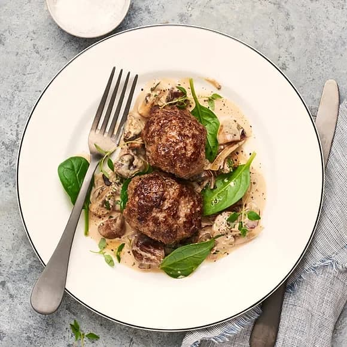

Biffar med mos!

Description
This is an easy fix, just some biffar
Ingredients
Biffarna
- 500 g blandfärs
- 1 ägg
- halv gul lök, riven
- 2 tsk torkad dragon
- 1 klyfta vitlök
- 0.5 msk dijonsenap
- halv citron, rivet skal
- 0.5-1 dl vispgrädda (el matlagningsgrädda)
- 0.5 tsk salt
- 1 krm svartpeppar
Gräddsåsen
- 50 g smör
- 1 msk vetemjöl
- 1 dl mjölk
- 3 dl vispgrädde
- 2 tsk koncentrerad oxfond
- 1-2 tsk dijonsenap
- 3-4 droppar kinesisk soja
- salt
- svartpeppar, malen
- sky från biffarna
Potatismosen
- 900 g mjölig potatis
- 50 g smör
- 2 dl mjölk
- 1 dl vispgrädde
- 2 krm vitpeppar
- salt
Biffarna
- Skala och riv lök och vitlök ned i en bunke.
- Tillsätt ägg, dijonsenap, rivet citronskal, salt, peppar och hälften av grädden. Rör ihop.
- Vänd i blandfärsen och rör till en fin färs. Tillsätt mer grädde successivt till önskad konsistens. Forma biffar och lägg på ett fat.
- Stek biffarna i en stekpanna med smör ca 3 minuter per sida, salta och peppra. Lägg sedan ned i den färdiga gräddsåsen.
Såsen
- Smält smöret i en kastrull, tillsätt mjölet och vispa i grädde. Låt puttra ihop.
Tillsätt oxfond, dijonsenap och några droppar kinesisk soja.
- Tillsätt även skyn från pannan där biffarna har stekts. Smaka av med salt och nymalen svartpeppar.
Potatismosen
- Skala och koka potatisen i saltat vatten.
- Värm upp smör, mjölk och grädde i en kastrull.
- Häll av potatisen och pressa den med potatispress ned i en bunke.
- Tillsätt gräddmjölken successivt och smaka av moset med nymalen vitpeppar och salt.
- Servera biffarna med mos, gräddsås och rårörda lingon.